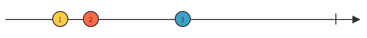

Reactive Extentions
RxJS
RxJS in a nutshell
Getting data...
Pull
function myFunction(someVal){
return someVal * 2
}
myFunction(5) // 10
function* myFunction() {
yield 5;
yield 10;
yield 15;
}
var generator = myFunction();
console.log(generator.next().value); // 5
console.log(generator.next().value); // 10
console.log(generator.next().value); // 15
Push
let willIGetNewPhone = new Promise((resolve, reject) => {
setTimeout(() => {
resolve(true)
}, 1000)
});
willIGetNewPhone.then(value => {
console.log("Got a new phone!") //prints after 1 sec
});

| Single | Multiple | |
|---|---|---|
| Pull | Function | Iterator |
| Push | Promise | Observable |
Now entering RxJS

Subscribing to future data
Search box
@ViewChild('searchBox') searchBox;
const event = fromEvent(searchBox, 'keydown')
event.subscribe({
next: keyPressed => {
console.log(keyPressed);
}
});
.subscribe
.subscribe({
next(x) { console.log('got value ' + x); },
error(err) { console.error('Error: ' + err); },
complete() { console.log('done'); }
});
Data sources
fromEvent(searchBox, 'keydown')
fromEvent(window, 'mousemove')
timer(1000) // 1 sec intervall
http.get // in Angular
of(1, 2, 3) // get each item independently
from(somePromise) // Create from promise
Any many more
Observable
of(42, 200).subscribe(next => {
console.log(next); // 42, 200
});
Observable
var myObservable = new Observable(observer => {
observer.next(42); // "return" a value instantly
observer.next(200); // "return" a value instantly
});
myObservable.subscribe(next => {
console.log(next); // 42, 200
});
Each subscription is independent
myObservable = of(42, 200);
myObservable.subscribe(next => {
console.log(next); // 42, 200
});
myObservable.subscribe(next => {
console.log(next); // 42, 200
});
myObservable.subscribe(next => {
console.log(next); // 42, 200
});
Nothing happens until someone subscribes
http.get('vg.no') // nothing
http.get('vg.no').subscribe(...) // get call is executed
Hot vs Cold
Unsubscribe
const subscription = event.subscribe({
next: keyPressed => {
console.log(keyPressed);
}
});
// sometime later
subscription.unsubscribe();
Creating Observables
of(1, 2, 3)
.subscribe(next => {
console.log(next); // 1, 2, 3
})
from([1, 2, 3])
.subscribe(next => {
console.log(next); // 1, 2, 3
})
fromEvent(window, 'mousemove')
.subscribe(next => {
console.log("Mouse movement");
});
interval(1000)
.subscribe(next => {
console.log(next) //0, 1, 2, 3....
})
const myObservable = new Observable(observer => {
let counter = 0;
setInterval(() => {
observer.next( counter++ );
}, 1000);
});
myObservable.subscribe(next => {
console.log(next) // 0, 1, 2, 3.....
})
But what if you want to change the data before it arrives?
Streams and time axis
Operators
myObservable
.pipe( operator, operator, operator... )
.subscribe
Operators
map()
filter()
skip()
delay()
throttleTime()
debounceTime()
switchMap()
retry()
catch()
take(number)


RxJS on next level
Using result from one observable to change to another
Getting user info in order to retrieve something else
Error Handling

Angular HttpClient
http.get(....).pipe(...).subscribe(...)
http.post(...).pipe(...).subscribe(...)
Search box
const event = fromEvent(searchBox, 'keydown')
event
.subscribe({
next: keyPressed => {
console.log(keyPressed);
}
});
const event = fromEvent(searchBox, 'keydown')
event.pipe(debounceTime(500)) // half a second
.subscribe({
next: keyPressed => {
console.log(keyPressed); // not instant
}
});
interval(1000)
.pipe(take(5))
.subscribe(next => {
console.log(next)
});
fromEvent(window, 'mousemove')
.pipe(debounceTime(1000))
.subscribe(next => {
console.log("No movement for one sec!")
});
interval(5000)
.pipe(
switchMap(() => {
return this.http.get("www.ulv.no")
.catch(error => empty())
})
)
.subscribe(data => {
console.log(data);
})
Subject
Active observables
Shared by default
new Observable(observer => {
observer.next(42);
})
.subscribe(next => {
console.log(next); // 42
});
let mySubject = new Subject();
mySubject.subscribe(next => {
console.log(next); // 42, 200
});
mySubject.next(42); // next is outside!
mySubject.subscribe(next => {
console.log(next); // 200
});
setTimeout(() => {
mySubject.next(200);
}, 1000);
Works really similar to EventEmitter

Behavior Subject
Subject variables, with default value
username: BehaviorSubject = new BehaviorSubject("Greger");
username.subscribe(next => {
console.log(next) //Greger, Tom
})
username.next('Tom')
username.subscribe(next => {
console.log(next) // Tom
})
Replay Subject
Async Subject
When to use a subject over observales?
When you need a shared observable that can push/next() values from outside the observable
When need behavior of replay or behavior subject
todoSubject: Subject = new Subject();
addItem(newItem){
this.listOftodos.push(newItem);
this.todoSubject.next({
todoItems: this.listOftodos
});
}
this._todoService.getStream()
.subscribe(next => {
this.todoListLocal = next;
});
private userSubject: BehaviorSubject = new BehaviorSubject("Guest")
newUser(newUser){
this.userSubject.next(newUser);
}
this._todoService.getUserStream().subscribe(next => {
console.log(next);
});
let subscription = observable.subscribe(......)
//Some time later, for example on component destoy/unmount
subscription.unsubscribe()
Reactive Extentions
RxJS
Do not overuse RxJS
www.github.com/JGH153
reactivex.io
reactivex.io/rxjs